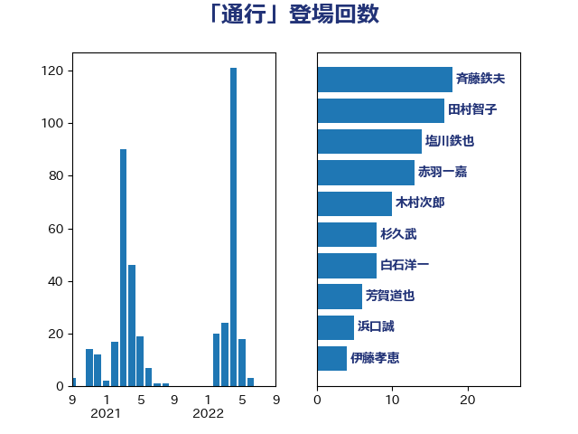

単語「通行」

| 斉藤鉄夫 | 公明党 | 18 回 |
| 田村智子 | 日本共産党 | 17 回 |
| 塩川鉄也 | 日本共産党 | 14 回 |
| 赤羽一嘉 | 公明党 | 13 回 |
| 木村次郎 | 自由民主党 | 10 回 |
| 杉久武 | 公明党 | 8 回 |
| 白石洋一 | 立憲民主党 | 8 回 |
| 芳賀道也 | 国民民主党 | 6 回 |
| 浜口誠 | 国民民主党 | 5 回 |
| 伊藤孝恵 | 国民民主党 | 4 回 |
| 木村英子 | れいわ新選組 | 4 回 |
| 熊谷裕人 | 立憲民主党 | 4 回 |
| 高木かおり | 日本維新の会 | 4 回 |
| 山崎誠 | 立憲民主党 | 3 回 |
| 浅野哲 | 国民民主党 | 3 回 |
| 中村裕之 | 自由民主党 | 2 回 |
| 井上哲士 | 日本共産党 | 2 回 |
| 吉田宣弘 | 公明党 | 2 回 |
| 大西健介 | 立憲民主党 | 2 回 |
| 岩渕友 | 日本共産党 | 2 回 |
| 川田龍平 | 立憲民主党 | 2 回 |
| 森山浩行 | 立憲民主党 | 2 回 |
| 竹内真二 | 公明党 | 2 回 |
| 緑川貴士 | 立憲民主党 | 2 回 |
| 若松謙維 | 公明党 | 2 回 |
| 足立敏之 | 自由民主党 | 2 回 |
| 酒井庸行 | 自由民主党 | 2 回 |
| 三浦信祐 | 公明党 | 1 回 |
| 下野六太 | 公明党 | 1 回 |
| 串田誠一 | 日本維新の会 | 1 回 |
| 五十嵐清 | 自由民主党 | 1 回 |
| 井上英孝 | 日本維新の会 | 1 回 |
| 伊藤俊輔 | 立憲民主党 | 1 回 |
| 佐々木さやか | 公明党 | 1 回 |
| 古川直季 | 自由民主党 | 1 回 |
| 古川禎久 | 自由民主党 | 1 回 |
| 国光あやの | 自由民主党 | 1 回 |
| 塩田博昭 | 公明党 | 1 回 |
| 室井邦彦 | 日本維新の会 | 1 回 |
| 小熊慎司 | 立憲民主党 | 1 回 |
| 小野泰輔 | 日本維新の会 | 1 回 |
| 山岸一生 | 立憲民主党 | 1 回 |
| 山本剛正 | 日本維新の会 | 1 回 |
| 日下正喜 | 公明党 | 1 回 |
| 朝日健太郎 | 自由民主党 | 1 回 |
| 杉田水脈 | 自由民主党 | 1 回 |
| 森屋隆 | 立憲民主党 | 1 回 |
| 櫻田義孝 | 自由民主党 | 1 回 |
| 渡辺猛之 | 自由民主党 | 1 回 |
| 石井章 | 日本維新の会 | 1 回 |
| 石川大我 | 立憲民主党 | 1 回 |
| 福島伸享 | 無所属 | 1 回 |
| 萩生田光一 | 自由民主党 | 1 回 |
| 西田昭二 | 自由民主党 | 1 回 |
| 豊田俊郎 | 自由民主党 | 1 回 |
| 足立康史 | 日本維新の会 | 1 回 |
| 遠藤敬 | 日本維新の会 | 1 回 |
| 鈴木義弘 | 国民民主党 | 1 回 |
| 長峯誠 | 自由民主党 | 1 回 |
| 青山大人 | 立憲民主党 | 1 回 |
| 高橋千鶴子 | 日本共産党 | 1 回 |
| 高野光二郎 | 自由民主党 | 1 回 |